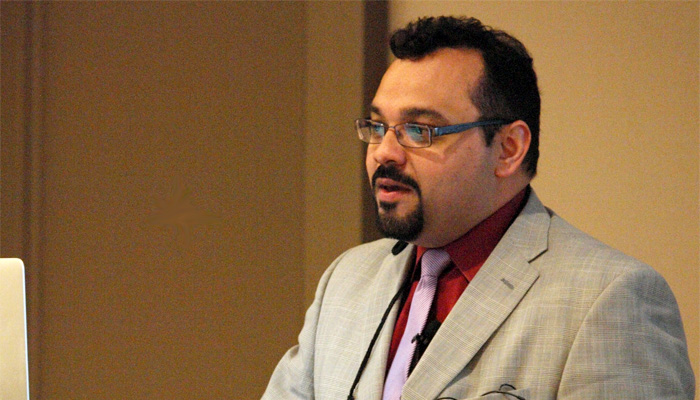

Course Description
Visual Media 2034 offers a course introduction to the visual image and visual thinking applied to photography, video, and film. Students in this class will learn how to apply hands on skills in these fields to better understand the course.The purpose of the course is to introduce students to the concepts and skills needed to succeed as producers of media, journalism, public relations, and other communication fields. To achieve this goal, students are expected to frequently produce visual and written assignments in this course. In addition, individuals are expected to use various tools and sources of media so that their own personal productions will be creative, accurate, ethical, and understandable.
Teacher's Biography: Carlos Evia
Carlos Evia is a professor in the Department of Communication at Virginia Tech. He teaches courses in professional communication and content management strategies. He was awarded the Frank R. Smith Award for Distinguished Article in the Journal Technical Communication in May 2017 and the Outstanding Faculty Outreach of Virginia Tech College of Liberal Arts and Human Sciences in May 2011. His professional activites include Lightweight DITA Subcommittee Darwin, Information Typing Architecture Technical Committee, Society for Technical Communication, Virginia Tech Center for Human-Computer Interaction, and the Virginia Tech Hispanic/Latin Faculty and Staff Caucus.
Dr. Evia enjoys spending time with his daughter, various chicken recipes, having fun with his students, sharing funny stories, and wearing cool, fancy ties. He cares a lot about the students and the course, as well as the students' progress in the course. He teaches attentively ensuring that individuals will understand and retain the concepts taught in class.
My Opinion and Experience
My experience in this class has been both rewarding and challenging. I have encountered many ups and downs dealing with things I have never delt with ever before. Through this course, Mr. Evia has taught me so many new skills and assets. I now know how to formulate a professional page layout, take a professional photo, compile videos, and code for a new website. I was introduced to many new softwares that helped me foster this new knowledge and practice what I've learned. For example, I learned how to navigate Adobe Creative Cloud and Atom, a text editor site for coding.
However, with all the new knowledge I learned, I came head to head with many new challenges. Learning anything new can be a little difficult at times. I found myself struggling with getting accustomed to the new softwares, tools, and resources. They were so complex and intricate, and there are so many layers to the tools. Still, struggling past these hardships gave me a sense of achievement and gratification. Accomplishing my final projects and seeing the finished product was rewarding. Dr. Evia was a great instructor. I think I'll earn an A in this class
